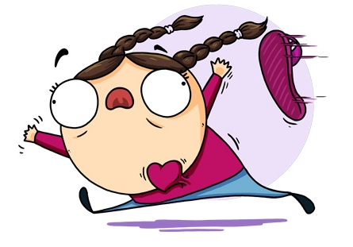

QUÉDATE CON QUIÉN TE ACELERE EL CORAZÓN
COMO LO HACÍA LA CHANCLA DE TU MADRE
NO ES QUE TENGA
SIEMPRE RAZÓN
ES QUE NUNCA
ESTOY EQUIVOCADA
- Nada arruina tanto un viernes, como descubiri que en realidad es jueves.
- No te odio, pero ojalá te pongan un burguer en la puerta de tu gimnasio.
- Cariño, estoy lista en 5 minutos. Si lo lo estoy, vuelve a leerlo.
- Hoy me levanté con ganas de hacer deporte ... y me acosté a ver si se me pasaban.
- Yo cuido mis abdominales, por eso los rotejo con mi barriga.